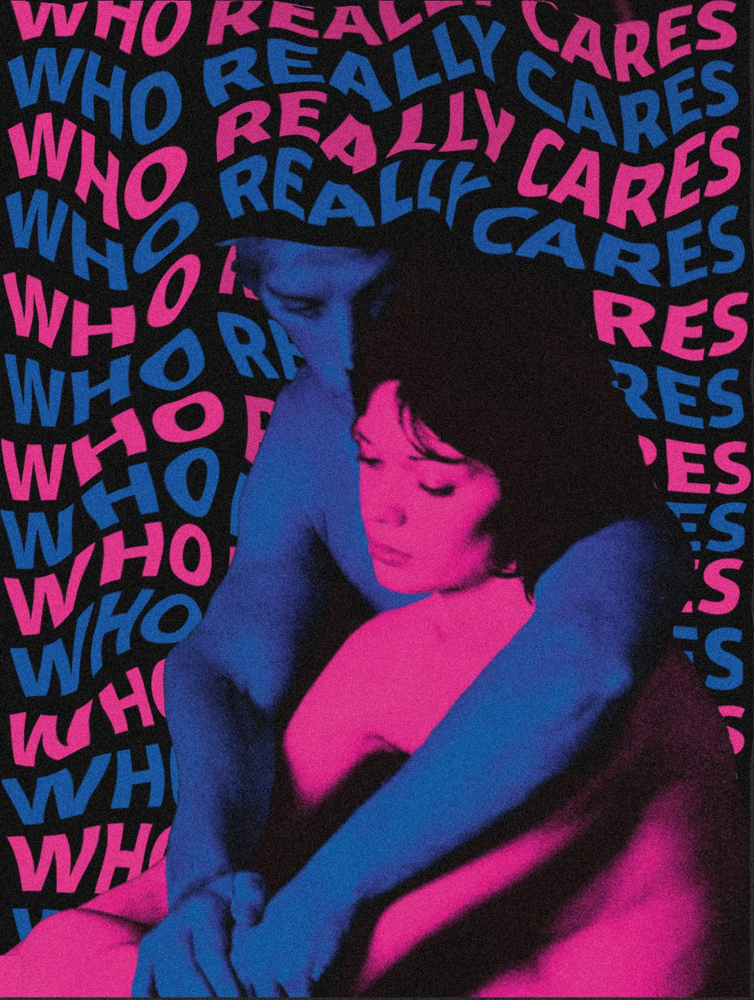
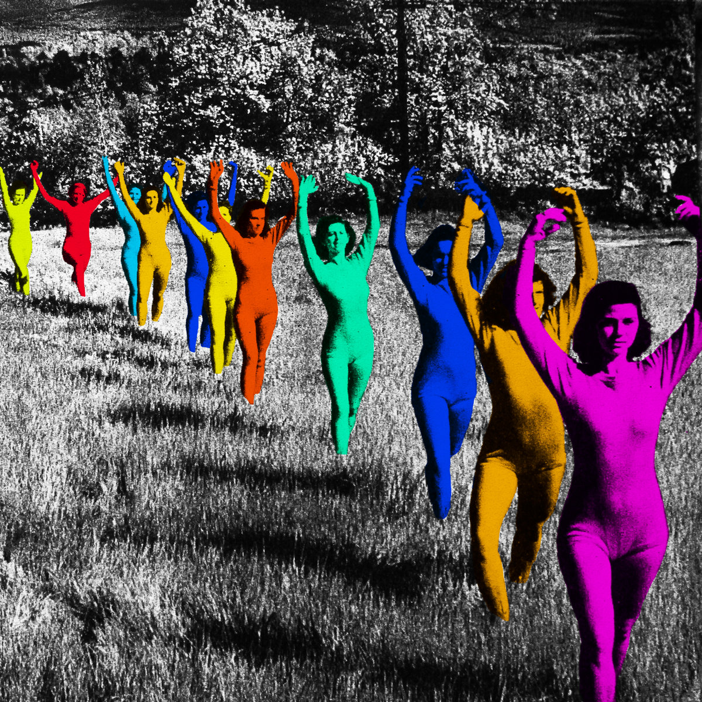

French Exit

TV Girl's "French Exit" is a captivating indie pop album released in 2014. Blending elements of lo-fi, electronic, and dreamy pop, the album showcases TV Girl's signature style, characterized by clever lyricism and infectious melodies. "French Exit" weaves tales of love, heartbreak, and existential musings, all delivered with a tongue-in-cheek tone. Standout tracks like "Birds Don’t Sing" and "Lovers Rock" feature nostalgic samples, smooth vocals, and groovy beats that create a retro yet modern soundscape. The album's production is polished but maintains an intimate, DIY feel, making it a favorite among fans of quirky, introspective pop music.
View AlbumWho Really Cares
TV Girl's "Who Really Cares" is a vibrant and introspective album released in 2016. Known for its playful yet thought-provoking lyrics, the album delves into themes of love, disillusionment, and the complexities of modern relationships. With a sound that blends indie pop, hip-hop influences, and nostalgic samples, "Who Really Cares" offers a unique listening experience. Tracks like "Taking What's Not Yours" and "Not Allowed" showcase TV Girl's knack for catchy melodies and clever storytelling. The album's production is lush and layered, featuring breezy vocals, electronic beats, and a touch of vintage charm, making it a standout in the band's discography.
View AlbumDeath of a Party Girl
TV Girl's "Death of a Party Girl" is a bittersweet and introspective album released in 2018. With a cinematic and melancholic tone, the record explores themes of fleeting youth, unfulfilled desires, and the complexities of love. The album feels like a hazy, late-night reflection, combining TV Girl's signature use of dreamy samples, synths, and heartfelt storytelling. Tracks like "Crying" and "Blue Hair" highlight the band's ability to blend humor and vulnerability, creating relatable yet deeply personal narratives. "Death of a Party Girl" is a poignant exploration of emotional turbulence wrapped in lush, lo-fi production, making it a standout in their discography.
View Album